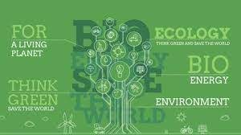

Ecological environmental protection
Ecological environmental protection refers to changing concepts and ideas, strengthening guidance, establishing a green and low-carbon development concept, developing a green and low-carbon economy, and promoting ecological, healthy and sustainable development. Ecological protection is an inevitable choice for the future development of human society. Government departments should support and guide the vigorous development of green and low-carbon industries from the policy level, and guide and support the society to establish the concept of green development and low-carbon development. Starting from the practice and exploration of developing a green and low-carbon economy, seek a green and low-carbon economic development model suitable for national conditions. In order to curb the worsening trend of climate change, actively take independent actions, start from various aspects, save energy, reduce emissions, reduce environmental disasters, and earnestly fulfill the obligation of quantitative emission reduction.
For ordinary people, both throwing less garbage or sorting garbage are essentially doing "garbage reduction". We will also provide more lectures and activities related to the ecological environment. We can actively spread the concept of ecological environmental protection and ecological civilization, gather the strength of members, participate in various environmental protection volunteer service activities, and actively contribute to the cause of the ecological environment